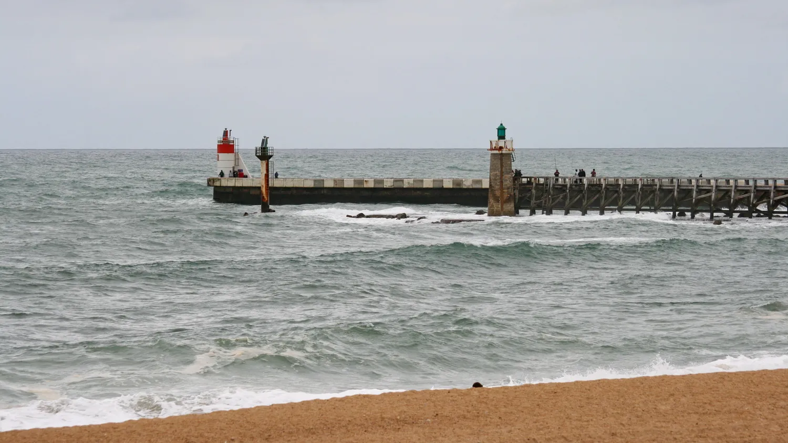

L’Estacade — Capbreton
Landes, France · baignade, paddle

La plus petite plage de Capbreton, sur la rive sud du port, contre la jetée. Plutôt familiale que surf : les enfants, les pêcheurs à marée basse et les paddles y trouvent leur place.
- Lieu
- Landes, France
- Niveau
- Variable selon les conditions
- Activités
- baignade, paddle
- Type d'eau
- Mer / océan
- Coordonnées
- 43.65, -1.45 (position approximative du secteur)
Dangers à connaître
- Plage contre la jetée du port : des bateaux passent dans le chenal tout près.
- Surveillance de la plage en été seulement : renseigne-toi avant de te baigner hors saison.
Le conseil d'Ocean Buddy
Reste côté plage, loin de la jetée et du chenal du port, surtout en paddle, et surveille les bateaux.
Ouvrir dans Ocean Buddy Télécharger sur l'App Store
Source : Fiche Ocean Buddy · octobre 2026 · d’après Tourisme Landes (Plage de l’Estacade) · à vérifier localement.